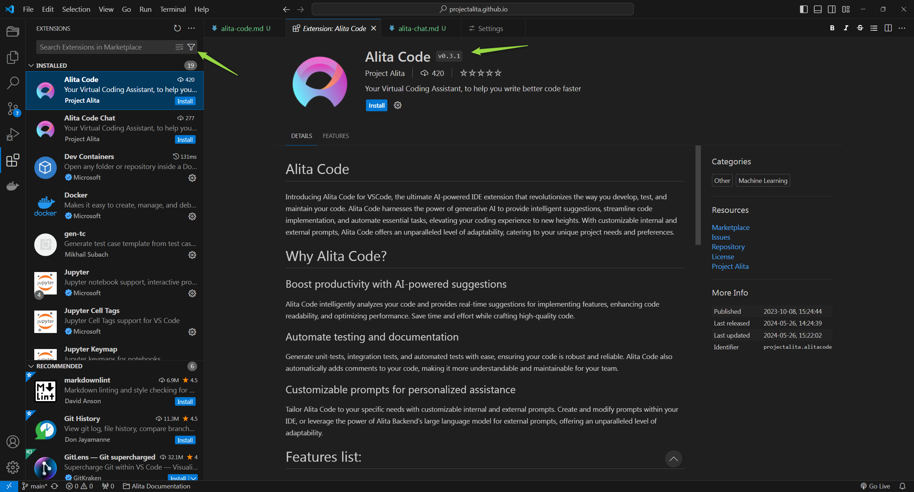
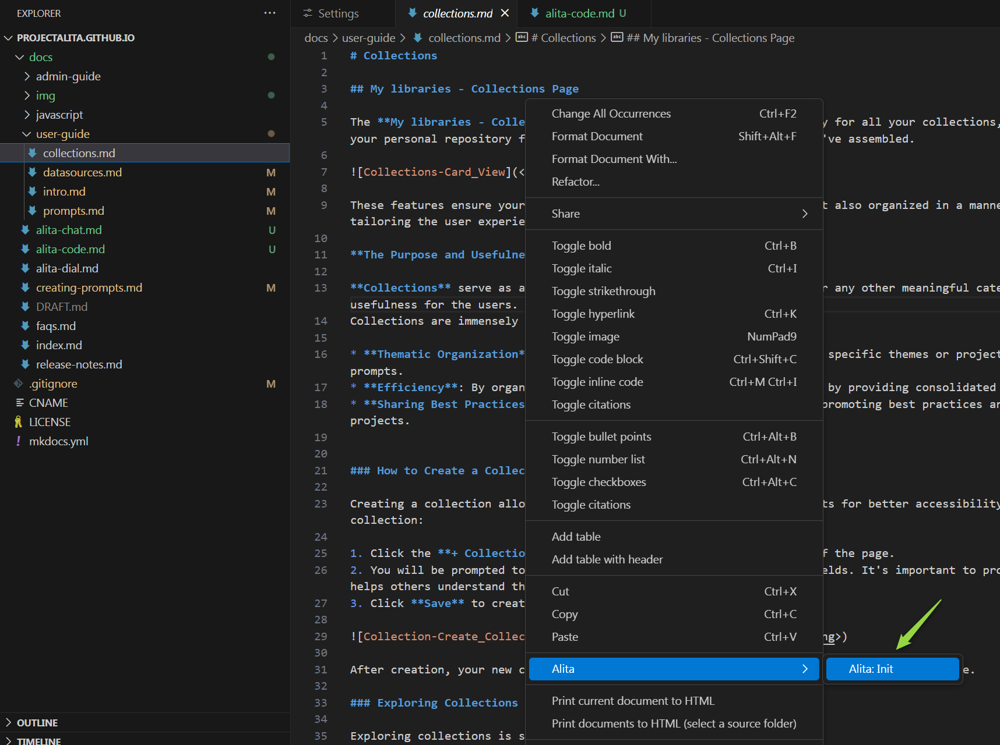
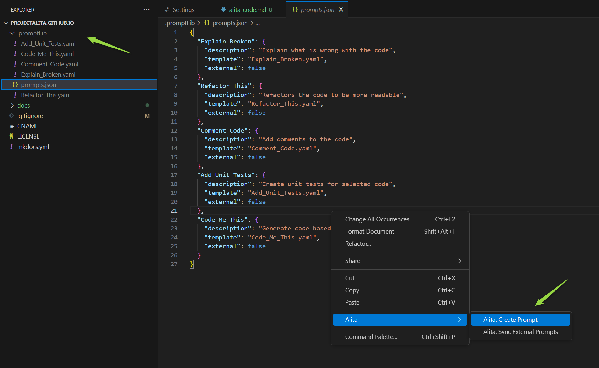
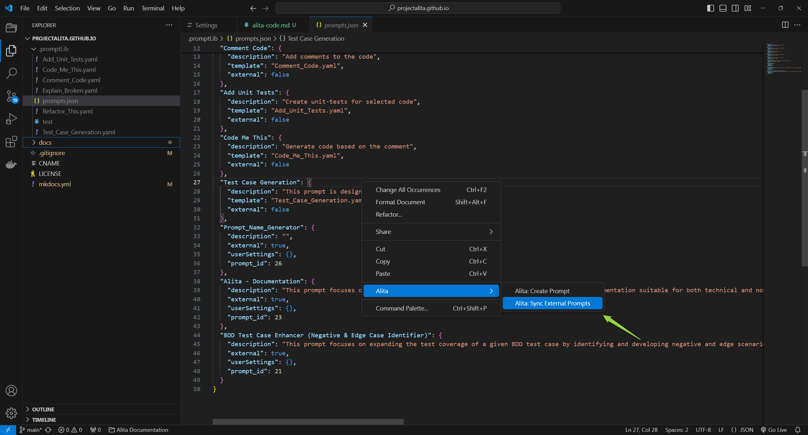

Alita Code
Get Started with Alita Code for VSCode
Welcome to the Alita Code your comprehensive resource for harnessing the power of the ultimate AI-powered IDE extension that's set to transform your coding workflow. Alita Code integrates seamlessly with VSCode, offering intelligent suggestions, automating routine tasks, and providing a level of adaptability that's unmatched, all designed to elevate your coding experience.
Why Choose Alita Code?
Alita Code is not just another IDE extension. It's a revolutionary tool designed to:
- Boost Productivity - with AI-powered suggestions, Alita Code analyzes your code in real-time, offering insights to enhance code quality, readability, and performance.
- Automate Testing and Documentation - simplify the creation of unit tests, integration tests, and automated tests. Alita Code also enriches your code with automatic commenting, making it more accessible and maintainable.
- Customizable Assistance - tailor Alita Code's assistance to your project's specific needs with customizable prompts, both internal and powered by Alita Backend's llms for external prompts.
Key Features
Alita Code comes packed with features designed to streamline your development process:
- AI-powered code suggestions for smarter coding
- Automated generation of unit tests, integration tests, and automated tests
- Automatic code commenting for better maintainability
- Customizable internal prompts for tailored assistance
- Project-specific external prompts powered by Alita Backend
- Code explanation and optimization recommendations
- Seamless native IDE integration
- Regular updates and enhancements
- Comprehensive documentation and dedicated support
- Collaboration-friendly design for team projects
- Secure and privacy-conscious implementation
Getting Started with Extension Commands
Jumpstart your Alita Code experience with these essential commands:
- Alita: Init: Initialize Alita Code in your workspace by creating a
.promptLibfolder at the root. - Alita: Create Prompt: Craft a new prompt within the
.promptLibfolder. - Alita: Extend Context: Enhance the context of an existing prompt in the
.promptLibfolder. - Alita: Predict: Choose from a list of prompts and generate predictions based on your selection.
- Alita: Sync External Prompts: Synchronize your external prompts with Alita Backend.
Alita Code is designed to be your coding companion, offering a blend of AI-powered efficiency and customizable support. Whether you're looking to enhance your productivity, streamline your testing process, or simply make your code more understandable, Alita Code is here to help. Let's embark on this journey to revolutionize your coding experience together.
Alita Code Configuration
Alita Code is a visual studio extension to handle prompt-engineering based code generation using Alita as a backend.
Installation
Getting started with Alita Code is straightforward:
- Navigate to the Extensions section in VS Code.
- Search for Alita Code in the Marketplace and click Install.

Setup
Once installed, setting up Alita Code to work with your projects is simple. To configure Alita Code effectively, you can adjust settings from the Settings page in Alita. There are two distinct types of settings available to cater to different needs:
- User Settings are global and apply to all sessions across any workspace. These settings ensure a consistent environment across your projects, providing a uniform experience regardless of the workspace in use. This is particularly useful for general preferences that you want to maintain across all your development activities.
- Workspace Settings are specific to a particular workspace. This flexibility is crucial when you need to apply different configurations such as project IDs, models, or other specific parameters in various workspaces. For example, in VSCode, you might want to have different project IDs for different projects to maintain separate environments or use different Gen AI models tailored to specific tasks.
To configure:
- From the VS Code Welcome screen, open the repository or folder where your project is located.
- Access Configuration by going to Settings.
- Navigate to Extensions → Alita Code.
- Select either User or Workspace tab.
- Configure the following settings to connect Alita Code with the Alita platform:
- Alitacode: Provider Server URL: Enter the URL to your LLM service provider, if applicable.
- Alitacode: Auth Token: Provide your API Key or Bearer token for the LLM service provider, if applicable.
- Alitacode: Api Version: Mostly for Azure OpenAI compatible APIs, provided by default.
- Alitacode: Model Name: Choose the LLM model from the dropdown list.
- Alitacode: Custom Model Name: Enter a custom model name for local prompts if the desired model is not listed.
- Alitacode: Custom Model Tokens: Set the max tokens for local prompts, default is 4096.
- Alitacode: Project ID: Enter the Project Id for Alita Backend, ignored for OpenAI.
- Alitacode: Integration Uid: Enter the AI integration Id from Alita Backend, ignored for OpenAI.
- Alitacode: Max Tokens: Set the max tokens for the selected model.
- Alitacode: Temperature: Adjust the temperature for the selected model.
- Alitacode: Default View Mode: Select the default display mode for the predictions.
- append - when you run Alita predict the results will be displayed after the text or part that you have selected.
- split - when you run Alita predict the results will be displayed in a separate place (view).
- replace - when you run Alita predict the results will be displayed instead of the text or part that you have selected.
- prepend - when you run Alita predict the results will be displayed before the text or part that you have selected.
- Alitacode: Top P: Set the Top P value for the selected model.
- Alitacode: Top K: Set the Top K value for the selected model.
- Alitacode: Verify Ssl: Toggle to set the verify LLM service provider certificate.
- Alita Code: Enable: Toggle to enable or disable the Alita Code extension.
Note: Changes may require restarting VS Code to take effect.


Important: If using ELITEA as your LLM service provider, copy the required settings (URL, ProjectId, Integration Uid, Model Name) from ELITEA HUB → Settings → Configuration page.
Configuration
To initialize Alita Code in your project:
- Open any file and right-click to select Alita → Alita:Init.
- This creates a
.promptLibfolder with default prompts andprompts.jsonfiles.

Alita Code Usage
With Alita Code set up, you can now:
- Create Prompts: Right-click in the editor and navigate to Alita → Create Prompt to craft new prompts.
- Extend Context: Enhance the context of an existing prompt by selecting text and choosing Extend Context from the right-click menu.
- Predict: Generate predictions by selecting Alita Predict after right-clicking selected text.
- Sync External Prompts: Keep your external prompts up-to-date with Alita Sync External Prompts.
Create a Prompt
Creating a custom prompt in Alita Code allows you to tailor Gen AI suggestions to your specific tasks. Here's how to create one:
- Open a File: Start by opening any file from your project, or create a new one.
- Access Alita Menu: Right-click in the editor view to bring up the context menu, where you'll find the Alita item.
- Create Prompt Option: Hover over Alita in the menu, and on the second level menu, select “Create Prompt”.
- Name Your Prompt: Enter a name for your prompt-template, such as "Generate unit-tests".
- Describe Your Prompt: Press Enter and provide a description for your prompt.
- Provide Prompt Content: Press Enter again and input the content of your prompt. This can be modified later in the
.promptLibfolder. - Finalize Creation: Hit Enter to finalize. Alita will add a reference to the new prompt in
prompts.jsonand create a corresponding.yamlfile in the.promptLibfolder, which can be edited to extend content and add examples.

Extend Prompt Context
Enhance the context of an existing prompt with selected text from your code, improving the relevance of AI suggestions:
- Open and Select: Open any file from your project and select a portion of the text.
- Access Alita Menu: Right-click to open the context menu and find the Alita item.
- Extend Context Option: Hover over Alita and select "Extend Context" from the submenu.
- Choose a Prompt: Pick the prompt you wish to extend the context for from the dropdown list.
- Extend Context: The selected text will be automatically added to the prompt's context, enriching its understanding for future suggestions.
This feature significantly boosts productivity by integrating Gen AI tools directly into the testing process for real-time analysis and enhancement.
Predict (Execute) Prompt
To predict (execute) a prompt directly from VS Code to generate Gen AI-driven code suggestions:
- Open a File and Select Text: Open any project file and select the text you want to analyze or for which you need suggestions.
- Access Alita Menu: Right-click in the editor view to see the Alita menu item.
- Predict Option: Hover over Alita and choose
Alita Predictfrom the submenu. - Select a Prompt: Pick the prompt you wish to execute from the dropdown list.
- View Predictions: The generated response will be displayed according to the method selected in
Alita Code: Default View Mode.


Note: You can use default prompts, those you've created, or external prompts synced from Alita HUB.
Synchronize External Prompts
Sync prompts created in the Alita HUB with your Alita Code setup for seamless integration:
- Open
prompts.json: Locate and open theprompts.jsonfile. - Access Alita Menu: Right-click in the editor to see the Alita menu option.
- Sync Prompts Option: Select "Alita Sync External Prompts" from the submenu.
- Synchronization: The prompts will be synced and added to the
prompts.jsonfile, with a.yamlfile created for each synced prompt. - Usage: These prompts are now ready to be used with
Alita: Promptscommand.

Note: To sync and use prompts from ELITEA HUB, tag the prompt with code in ELITEA HUB.
By following these detailed steps, you can maximize your productivity and coding efficiency with Alita Code's AI-powered features.